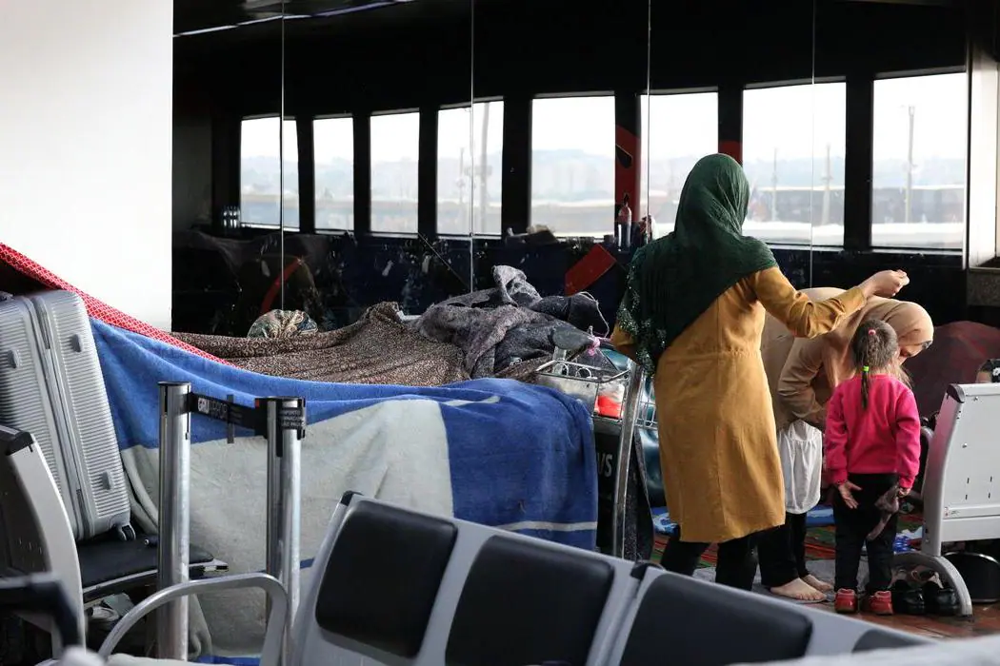

|
 |
Ministério da Justiça apresenta sétima edição do relatório “Refúgio em Números” e painel interativo de decisões sobre pedidos de reconhecimento da condição de refugiado desde 1985.Brasília, 21 de junho de 2022 – Desde 1985, o Brasil reconheceu cerca de 60 mil pessoas como refugiadas, a maioria delas (48.789) proveniente da Venezuela – seguido por pessoas da Síria (3.667), República Democrática do Congo (1.448) e Angola (1.363). Nesta população, cerca de 90% são pessoas entre 18 e 45 anos de idade. E, apenas em 2021, foram confirmados 3.086 pedidos de reconhecimento da condição de refugiados, sendo que pessoas da Venezuela e de Cuba foram as que mais obtiveram esta confirmação. Do total de casos confirmados em 2021, 50,4% deles foram feitos por crianças e adolescentes na faixa etária de 5 a 14 anos. | Clique para saber mais. |
|  | Surto de sarna atinge refugiados afegãos no Aeroporto de Guarulhos.Cerca de 20 refugiados afegãos que estão abrigados no Aeroporto Internacional de Guarulhos (SP) foram diagnosticados com escabiose, também conhecida como sarna, na última quinta-feira (22).O surto de sarna foi identificado por médicos da Prefeitura de Guarulhos na semana passada e confirmado por profissionais de saúde de ONGs que atendem as famílias que deixaram o Afeganistão após a volta do Talibã ao poder.Clique para saber mais. | Clique para saber mais. |
 |
41 empresas se comprometem a contratar e treinar 250 mil refugiados na Europa.Pouco antes do Dia Mundial do Refugiado, 41 empresas multinacionais se comprometeram publicamente na segunda-feira (19) a fornecer empregos, treinamento e conexões para oportunidades de trabalho para mais de 250 mil refugiados na Europa. Eles incluem Accenture, Adecco, Amazon, Cisco, Generali, Hilton, ISS, Marriott International, Microsoft, Randstad, Starbucks e The Body Shop. As promessas da empresa, que serão cumpridas nos próximos três anos, estão sendo feitas em uma cúpula empresarial em Paris organizada pela Tent Partnership for Refugees, uma coalizão empresarial global de mais de 300 empresas que se comprometeram a ajudar a integrar economicamente pessoas que fugiram de seus países de origem para escapar da guerra e da perseguição política. | Clique para saber mais. |